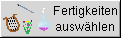
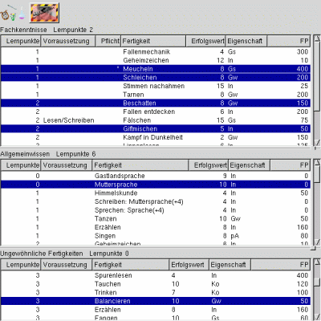

In diesem Fenster werden die Grundfertigkeiten des Abenteurers festgelegt. Im rechten Fenster finden sich die Sinnesfertigkeiten, im linken Fenster werden die erworbenen Fertigkeiten angezeigt.
In diesem Fenster werden die Grundfertigkeiten des Abenteurers festgelegt. Im rechten Fenster finden sich die
Sinnesfertigkeiten, im linken Fenster werden die erworbenen Fertigkeiten angezeigt.


Durch betätigen dieses Buttens werden die Angeborenen Fertigkeiten des Abenteurers ermittelt:
linke Maustaste:
Eine angeborene Fertigkeit wird ausgewürfelt.
rechte Maustaste:
Es öffnet sich der Auswahldialog für die angeborenen Fertigkeiten (Abb. rechts).
Hier könenn eine oder mehrere Fertigkeiten ausgewählt werden.


Nachdem die Lernpunkte ermittelt wurden, öffnet sich beim Betätigen dieses Buttons das
Auswahlfenster für die Fertigkeiten (Abb. rechts).
Es werden nur Fertigkeiten aufgelistet, bei denen die Voraussetzungen erfüllt sind. Notwendige Fertigkeiten
sind mit einen '*' markiert.
Hier können bis zum Erreichen der jeweilig zur Verfügung stehenden Lernpunkte die jeweiligen Fähigkeiten
durch Mausklick ausgewählt werden. Dabei werden die verbleibenden Lernpunkte automatisch berechnet.
Ausgewählte Fertigkeiten erscheinen blau markiert. Wenn die Anzahl der Lernpunkte nicht ausreicht, so läßt
sich die Fertigkeit nicht auswählen.
Durch nochmaliges betätigen der Maustaste wird eine ausgewählte Fertigkeit wieder abgewählt und die
entsprechenden Lernpunkte werden wieder gutgeschrieben.
Bei der Anwahl von Sprachen und Schriften öffnet sich ein weiteres Auswahlfenster, in welchem die
gewünschte Sprache ausgewählt wird.